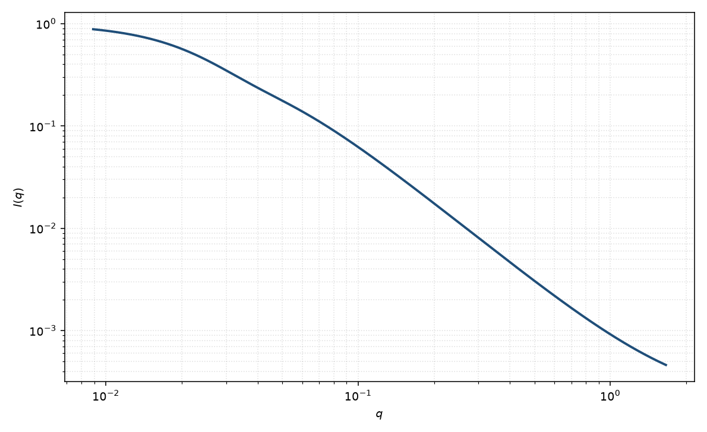

高斯–洛伦兹凝胶
Gauss–Lorentz gel
适用场景
化学凝胶同时有冻结的固态不均质与液体般的热涨落。Shibayama 把前者写成高斯（尺寸 $\Xi$），后者写成洛伦兹（关联长度 $\xi$）。
两个分量都是洛伦兹时用双洛伦兹。需要额外幂律网络尾时用凝胶拟合经验式。
物理图像
高斯项来自交联引入的静态浓度不均质，相当于实空间高斯相关，低 $q$ 不发散。洛伦兹项是网格的热涨落，高 $q$ 为 $q^{-2}$。
取向：拉伸凝胶使 $\Xi$ 与 $\xi$ 各向异性。磁性凝胶的磁不均质往往只进入高斯项。
示意图

核心公式
出发点
化学凝胶同时有冻结的固态浓度不均质与液体般的热涨落。前者的实空间相关近高斯（有限斑块，低 $q$ 不发散），Fourier 变换仍是高斯；后者是网格的 Ornstein–Zernike 模，$\gamma\sim\mathrm{e}^{-r/\xi}/r$。
推导
三维高斯 $\gamma_{\mathrm{G}}(r)\propto\exp(-r^2/(2\Xi^2))$ 的变换是 $\exp(-q^2\Xi^2/2)$。OZ 项的变换见洛伦兹页，为 $1/(1+q^2\xi^2)$。两套模线性叠加（Shibayama）
$$I(q)=I_G\exp(-q^2\Xi^2/2)+\frac{I_L}{1+q^2\xi^2}+B.$$$\Xi$ 为固态斑块尺寸，$\xi$ 为热关联长度，通常 $\Xi>\xi$。固态项写成高斯而不是第二个洛伦兹，是为了让低 $q$ 饱和而不是 $\sim q^{-2}$ 继续抬升。
低 $q$ 与渐近
低 $q$：$I\to I_G+I_L$，固态 Guinier 型曲率由 $\Xi$ 决定（注意指数是 $\Xi^2/2$ 而非 $R_g^2/3$，定义不同）。高 $q$ 高斯项指数衰减，只剩洛伦兹 $q^{-2}$ 尾。需要额外网络幂律时用凝胶拟合页。
参数表
| 参数 | 符号 | 含义 | 单位 | 典型范围 |
|---|---|---|---|---|
| 固态尺寸 | $\Xi$ | 冻结不均质 | Å | 大于网格 $\xi$ |
| 热关联长度 | $\xi$ | 液体般涨落 | Å | 网格尺度 |
| 幅度 | $I_G,I_L$ | 两分量强度 | 与强度单位一致 | 交联与溶胀相关 |
| 标度 / 本底 | $\mathrm{scale}$, $B$ | 前置因子与常数本底 | 与强度单位一致 | 实验相关 |
拟合注意
取向：单轴拉伸后应分方向拟合两套长度，不要用一个 $\Xi$ 吸收各向异性。
多分散交联把高斯变宽，与 $I_G$ 相关。磁性：磁化颗粒若嵌在凝胶里，高斯项可能其实是颗粒 Guinier，须用对比区分。
可辨识性：$\Xi$ 靠近 $q_{\min}^{-1}$ 时高斯与本底无法分开。先在高 $q$ 约束 $\xi$，再放开固态项。
相近模型
参考文献
- Shibayama, M. Spatial inhomogeneity and dynamic fluctuations of polymer gels. Macromol. Chem. Phys. 1998, 199, 1–30. DOI: 10.1002/macp.1998.021990101
- Horkay, F.; Hecht, A.-M.; Mallam, S.; Geissler, E.; Rennie, A. R. Macroscopic and microscopic thermodynamic observations in swollen poly(vinyl acetate) networks. Macromolecules 1991, 24, 2896–2902. DOI: 10.1021/ma00010a043